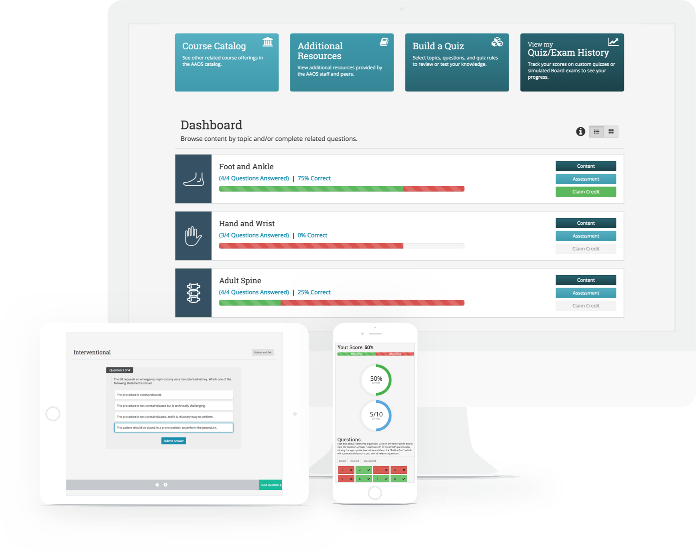
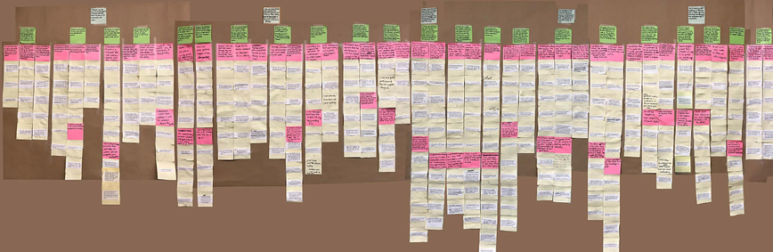

Learning Management System | UX Research
My Role
Project Manager, UX Researcher, Data Analyst
Methods
Interviews, Contextual Inquiry, Affinity Diagramming
My Responsibilities
Primary Client Contact, Protocol Development, Data Analysis, Final Presentation and Report Creation
About
This was a semester long project for SI 501: Contextual Inquiry and Consulting. Our team partnered with a nonprofit research and educational organization to help improve their learning management system (LMS). Through interviews, contextual inquiry, observation, affinity walls, and data analysis, we identified key issues pertaining to user experience.
Process
1. Client Meeting | 2. Interviews | 3. Analysis | 4. Findings | 5. Recommendations
1. Client Meeting
First, we met with the creators of the learning management system at the organization for a deep dive into the understanding of their system. We wanted to learn the purpose of the system, their goals for it, and areas they felt were in need of improvement. Following this initial client meeting we defined the scope of our project.Our goals were to:
- understand the reason(s) behind limited user interaction with the learning management system (LMS)
- inform recommendations to encourage increased user interaction with the LMS
2. Interviews
Interviews were conducted with a designer, a software developer, one professor, and three students. The format of these interviews were one-on-one, 60 to 90 minute in depth discussions. Our overarching questions were:
- What do users use the system for?
- Do users find the system helpful?
- Why are there gaps between the creator's expectations of use and the actual use of the system?
- How do interactions/instructions from users' professors affect their use of the system?
- What aspects do users like and dislike?
3. Analysis
Interpretation Sessions After each interview, our team met and re-listened to the recorded interview, highlighting key comments.
Affinity Diagramming 300+ key comments and quotes from interviews were recorded on sticky notes. Notes were clustered together with other similar notes, in groups of 5 or 6, under a sticky note describing their shared theme. We continued this grouping process with the successively higher level notes until all notes were grouped under 5 main themes.

4. Findings
- Students like that the system contains all the information they need in one place, however the organization and design of the portal make the information difficult to access.
- Technical glitches deter users from using the system more frequently.
- Users opt to use more reliable technologies for tasks that do not explicitly need to be performed within the system, such as communicating with other students or teachers.
- Users agree that many features are good ideas, but most features lack certain capabilities that users expect based on their experiences with other systems.
- The developer had no prior experience creating a LMS, and there was no user testing done before its launch.
5. Recommendations
- User testing and heuristic evaluation:
- Organize the resources page by content.
- Add direct reply feature and direct messaging in the chatroom
- Add direct links to the website for email reminders.